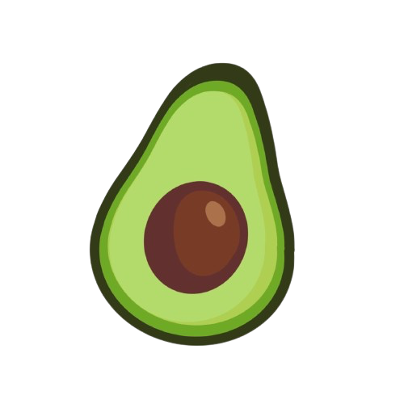
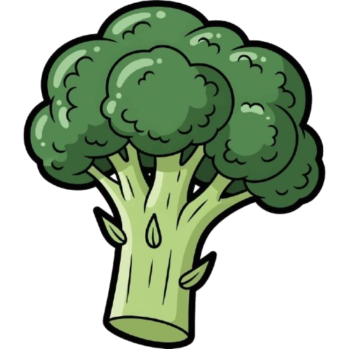
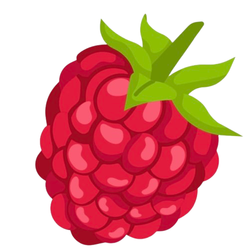

Oatlog
Kahvaltılıklar
3 Zeytinli Poğaça
Bol Sebzeli Protein Muffin
Çıtır Yulaflı Omlet Pizza
Frambuazlı Protein Pankek
Havuçlu Taco Pancake
Yulaf Poğaça
Yüksek Proteinli Lavaş Dürüm
Ana Tabaklar
Enginarlı Bahar Pilavı
Enginarlı Otlu Pilavı
Fırında Çıtır Tavuk
Kaptan Bezelye
Mercimek Mantısı
Mercimekli Balkabağı
Mısır Tabanlı Tavuk Pizza
Mısır Wrap
Tavuklu Tarator Salata
Ton Balıklı Sağlıklı Salata
Yeşil Mercimek Tofusu
Tuzlu Atıştırmalıklar
Çıtır Nohutlu Brokoli Salata
Çıtır Parmesanlı Brokoli
Panelenmiş Halka Kabak
Patates Çanağı
Pirinç Yufkası Böreği
Sebzeli Galette
Soslu Çıtır Patates Salata
Yeşil Mercimek Köftesi
Yeşil Mercimekli Salata
Sağlıklı Tatlılar
2 Malzemeli Hindistan Cevizli Kurabiye
Çilekli Galette
Tahin Soslu Yulaflı Krep
Pişmeyen Pratik Cheesecake
Protein Çörek
Raffaello Tadında Ara Öğün
Şeftalili Galette
Snickers Tadında Atıştırmalık
Şekersiz Şeftalili Crumble
Yulaflı Elmalı Kraker
Copyright Oatlog Inc.
×